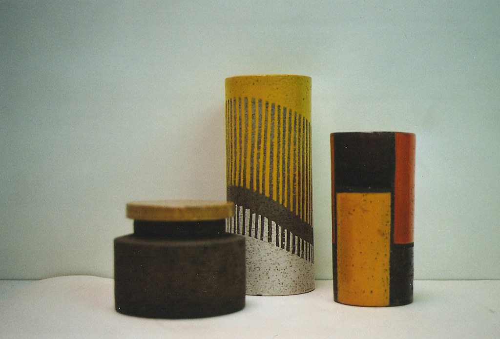
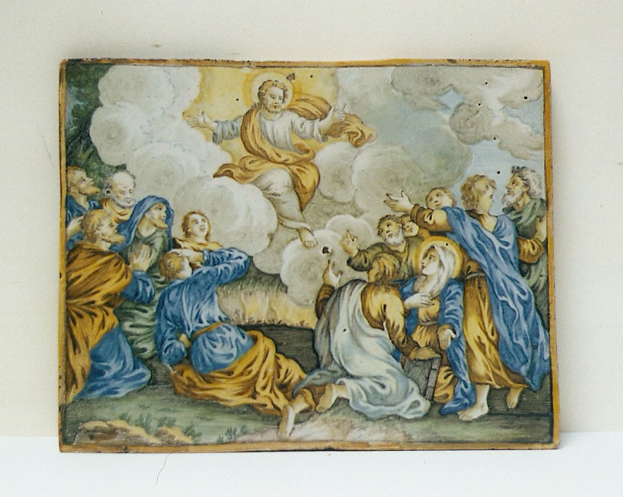

Maioliche, porcellane, materiali lapidei, terracotta, smalti e vetro. Specializzati dal 1990, in via Palazzuolo dal 1999. Prima di decidere, chiedeteci un preventivo.
Nel laboratorio si sceglie il tipo di lavorazione piu congeniale al recupero dell'oggetto. Non esiste un solo modo di restaurare, ed e la prima cosa da capire.
In alcuni casi il rincollo dei singoli pezzi e risolutivo: l'oggetto torna integro e la frattura resta leggibile.
Il ritocco e sottotono: si legge che l'oggetto e stato restaurato, e si distingue con chiarezza la parte originale da quella reintegrata.
Qui il restauro non si deve vedere: ricostruzione delle parti mancanti e relativa smaltatura, per restituire all'oggetto il suo valore estetico.
I costi sono rapportati al restauro scelto. Per questo prima di prendere una decisione conviene consultarci: si guarda l'oggetto, si capisce cosa serve, e solo dopo si parla di preventivo.
Portaci un oggetto da vedereDalle maioliche del Quattrocento al design italiano del Novecento. Alcuni dei pezzi che abbiamo restaurato in questi anni.
Siamo inoltre citati come restauratori in un volume dedicato alle maioliche figurate di Montelupo.
Il laboratorio e stato raccontato dalla stampa italiana e tedesca, e figura nella guida dell'Osservatorio Mestieri d'Arte.
Il numero di gennaio 2013 porta il laboratorio in copertina, con un articolo dedicato all'interno.
Un articolo sul laboratorio pubblicato nell'edizione tedesca della rivista.
Presenti nella guida dell'Osservatorio Mestieri d'Arte.
Citati come restauratori in un volume dedicato alle maioliche figurate di Montelupo.

Specializzati dal 1990 nel restauro di maioliche, porcellane e materiali lapidei, oltre che di terracotta, smalti e vetro. Il laboratorio apre in via Palazzuolo a Firenze nel 1999, con un'esperienza oggi trentennale.
I nostri servizi sono rivolti a tutti coloro che a vario titolo si interessano alla ceramica: collezionisti, commercianti o semplici amatori che intendono riportare a nuova vita manufatti danneggiati.
Operiamo sempre nel massimo rispetto degli oggetti, che spesso portano con se valori storico artistici e affettivi oltre che economici, seguendo le indicazioni che di volta in volta i clienti intendono segnalarci. Si eseguono lavori anche fuori dal laboratorio, per vasi e statue da giardino o altri oggetti di grandi dimensioni.
Una selezione delle ceramiche e porcellane che nel corso degli anni sono passate dal laboratorio.
Restaurare una ceramica non e solo un onere ma un piacere
Il laboratorio, via PalazzuoloPortate l'oggetto in laboratorio o mandateci una foto: guardiamo il danno, vi diciamo quale dei tre restauri conviene e quanto costa. Nessun impegno.
Via Palazzuolo 99r, 50123 Firenze
Lunedi a venerdi, 9.00 – 13.00 e 14.00 – 18.00. Su richiesta si estende
{kind=link}
{kind=link}
{kind=link}
{kind=link}
{kind=link}
{kind=link}
{kind=link}
{kind=link}
{kind=link}
{kind=link}
{kind=link}
{kind=link}
{kind=link}